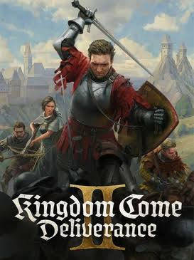

Kingdom Come: Deliverance II

Kingdom Come: Deliverance II — продолжение реалистичной исторической RPG о приключениях Индржиха в Богемии XV века.

Kingdom Come: Deliverance II — продолжение реалистичной исторической RPG о приключениях Индржиха в Богемии XV века.